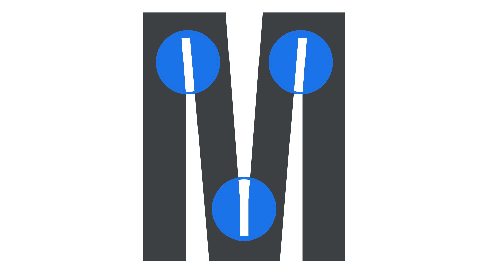

Ink trap
By Google Fonts Knowledge contributors · Google Fonts Knowledge.
Original article · Source on GitHub · CC BY-SA 4.0. Text, illustrations and existing credits reproduced from the licensed Knowledge repository. Open Shelf adapted the layout and links; these adaptations are also CC BY-SA 4.0. No endorsement implied.
An ink trap is an intentional negative space built into the design of characters’ letterforms to literally trap ink at certain intersections of the strokes, where ink might pool or bleed and create an undesirable emboldening of the text.

With the evolution of print technology and on-screen use of type, ink traps in modern typefaces often serve a more stylistic purpose rather than their traditional intent. However, utilitarian ink traps can still be found in type intended for small sizes (e.g. “Body” optical sizes), or in specific styles (e.g. the italic form of Ropa Sans).